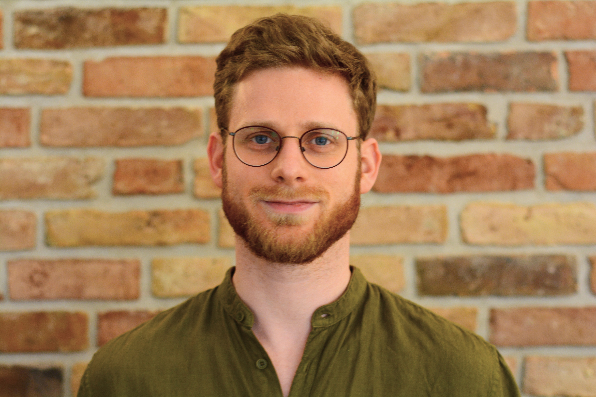
Jakob (aka der alte Jakob)
Jakob ist der Herr der Zahlen. Kein Euro kommt an ihm vorbei. Als eins von drei Gründungsmitgliedern war er von Anfang an dabei.
In unserem Wohnprojekt leben wir als WG zusammen. Unser Zusammenleben organisieren wir in regelmäßig stattfindenden Plena. Wir haben eine solidarische Essenskasse und treffen uns häufig zu gemeinsamen Mahlzeiten. Jede Person hat ihr Privatzimmer, aber wir nutzen viele Räume gemeinschaftlich, u.a. zwei Küchen, ein großes Wohn- und Esszimmer, einen Arbeitsbereich, einen Wintergarten und einen großen Keller, in dem wir eine Werkstatt eingerichtet haben. In unserem großen Garten bauen wir Gemüse an. Darüber hinaus bietet er Platz zum Spielen und Entspannen, ob beim Lesen im Grünen, am gemütlichen Lagerfeuer oder beim Beobachten von Vögeln und Eichhörnchen.
Derzeit leben zwölf Personen in der Syntopie, darunter drei Kinder. Wir streben an, langfristig miteinander zu leben. Damit das Wohnprojekt auch ein Ort für Kinder ist, haben wir uns auf ein familienfreundliches Mietmodell geeinigt.
Gerade in einer Stadt wie Frankfurt braucht so ein Hauskauf eine ganze Menge Geld. Wir würden uns freuen, wenn ihr uns bei unserem Hauskauf mit Direktkrediten unterstützen könntet. Wie das genau funktioniert wollen wir hier kurz aufzeigen.


Die Satzung des Syntopie e.V. setzt fest, dass der Verein das gemeinschaftliche Wohnen fördern soll. Entscheidungen treffen wir wenn möglich nach dem Konsentprinzip.
Alle Mitglieder sind gleichzeitig Bewohner:innen. Zwischen den Mitgliedern und dem Verein besteht ein Untermietverhältnis, denn der Verein ist der Hauptmieter des Hauses. Des Weiteren zahlen die Mitglieder Vereinsbeiträge, von denen gemeinsame Anschaffungen finanziert werden.
Aber was heißt „Syntopie“ eigentlich? Syntopie ist ein Kofferwort, gebildet aus „Syntop“ und „Utopie“. Ein Syntop (altgriechisch σύν (syn) „zusammen, gemeinsam“ und τόπος (topos) „Ort“) ist ein Lebensraum, in welchem verschiedene Arten oder Populationen koexistieren. Eine Utopie (altgriechisch οὐ (ou) „nicht“ und τόπος, also „Nicht-Ort“) ist der Entwurf einer möglichen, zukünftigen, meist aber fiktiven Lebensform oder Gesellschaftsordnung.
Eine Syntopie ist nach unserem Verständnis demnach eine Synthese von Individualität und Gemeinschaft. In unserem Wohnprojekt heißen wir Vielfalt willkommen und möchten individuelle Entfaltung ermöglichen. Zugleich wollen wir sowohl unser Zusammenleben als auch Haus und Garten nach gemeinschaftlich ausgehandelten Vorstellungen, unabhängig von tradierten Lebensentwürfen, gestalten.
Dafür steht auch unser Logo, das eine Eintracht zwischen zwei Spezies von Eichhörnchen darstellt. Es bringt zudem unseren von Weltoffenheit, Emanzipation und Egalitarismus geprägten Grundkonsens und unser klares Bekenntnis zu Demokratie und Toleranz zum Ausdruck.
Im Zuge des Erwerbs unseres Hauses werden wir voraussichtlich eine GmbH gründen, die das Haus kauft und es weiter an seine Bewohner:innen vermietet. Diese GmbH wird vermutlich zwei Gesellschafter haben: den Syntopie e.V. und das Mietshäusersyndikat.
Die Entscheidungen des täglichen Lebens verbleiben damit in der Hand der Bewohner:innen, die als Vereinsmitglieder auch die GmbH lenken. Das Mietshäusersyndikat besitzt lediglich grundlegende Vetorechte, die den Verkauf des Hauses betreffen.
Wir sind ein Verein aus 12 Menschen, die gemeinschaftlich wohnen, Verantwortung teilen und das Projekt langfristig tragen. Hier bekommt ihr ein Gesicht zu dem, was ihr unterstützt, in der Reihenfolge des Einzugs.

Jakob ist der Herr der Zahlen. Kein Euro kommt an ihm vorbei. Als eins von drei Gründungsmitgliedern war er von Anfang an dabei.
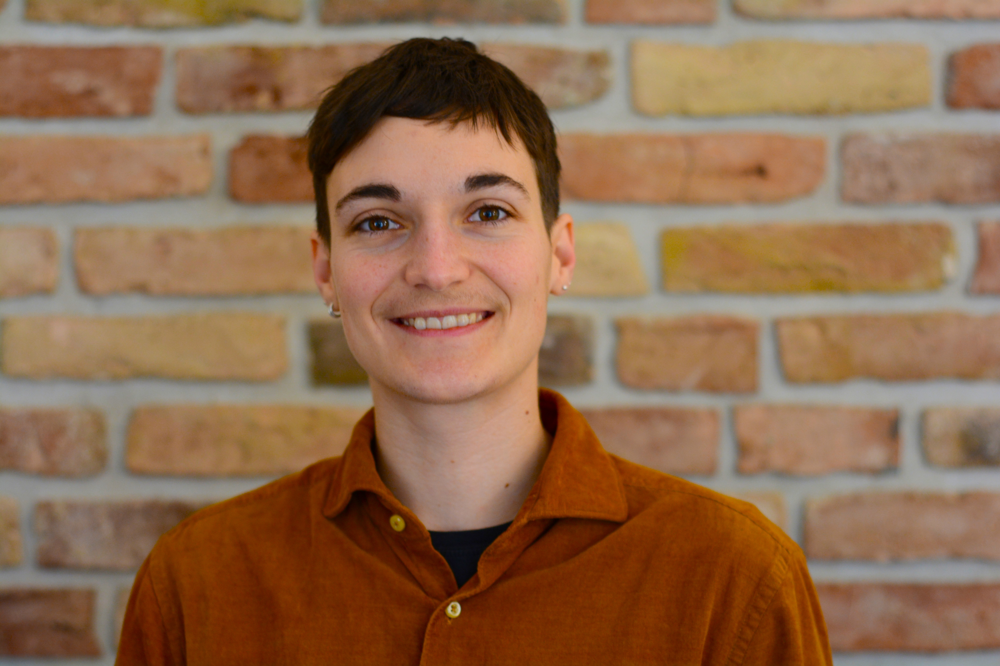
Noa baut alles aus Holz und was man nicht aus Holz bauen kann, kann man nicht bauen. Noa ist gemeinsam mit Jakob die "Keimzelle" des Projekts.
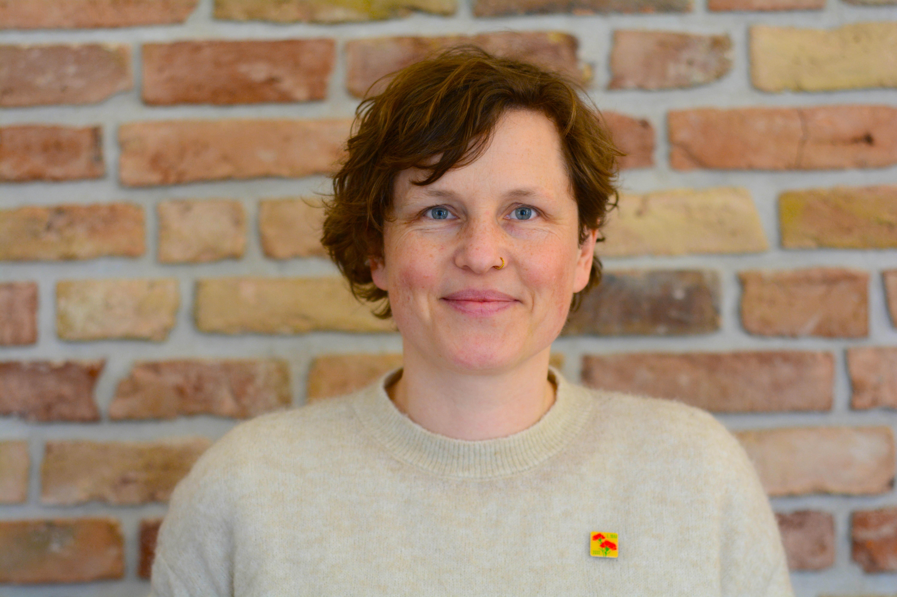
Ohne Garten wäre Sarah nur eine halbe Mitbewohnerin, aber ohne Sarah wäre der Garten auch nur halb so schön. Als drittes Gründungsmitglied von Anfang an dabei.
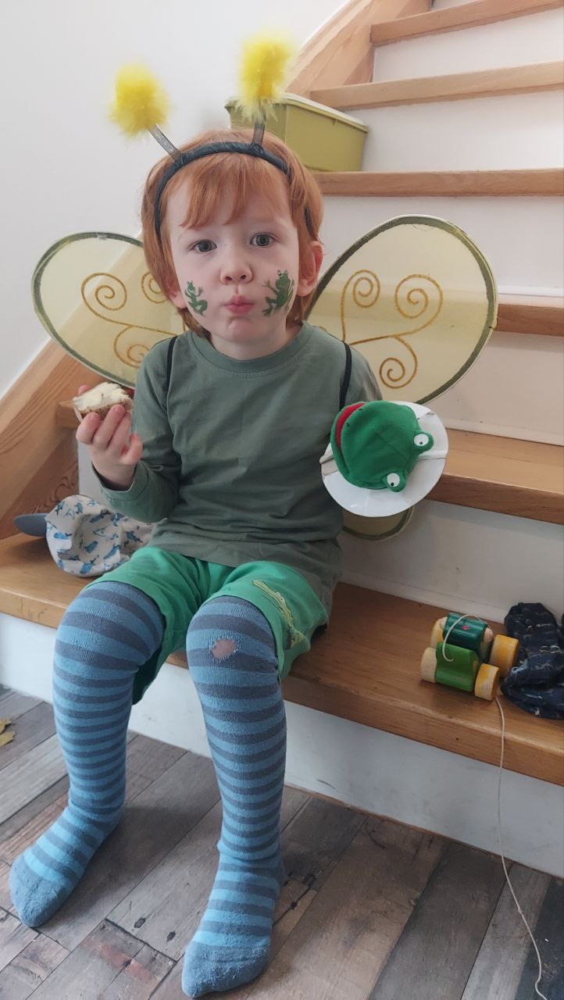
Der zweite Herr der Zahlen heißt Taavi. Er betreibt außerdem ein großen Bahnnetz und überwacht ein großes Straßennetz im Garten. Ist einiges zu tun!
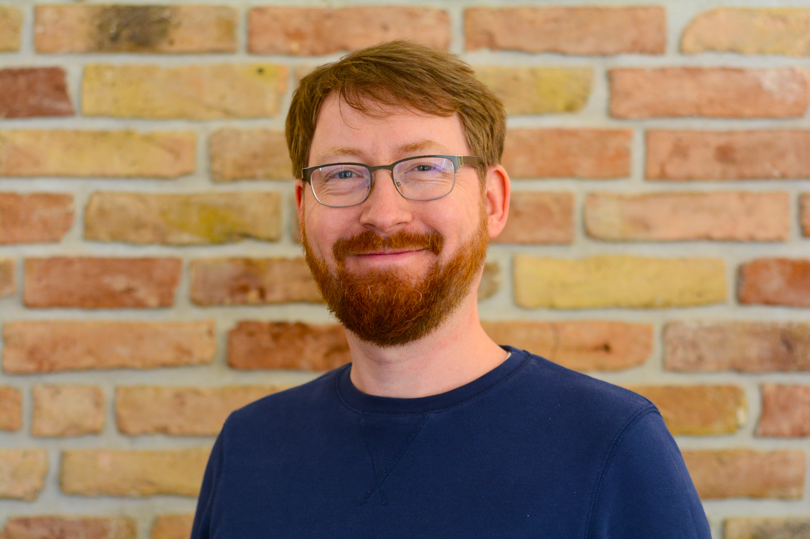
Jakob kennt das Haus wie seine Westentasche. Ja, genau, es gibt noch einen Jakob, genannt der "neue", obwohl er der ältere ist.
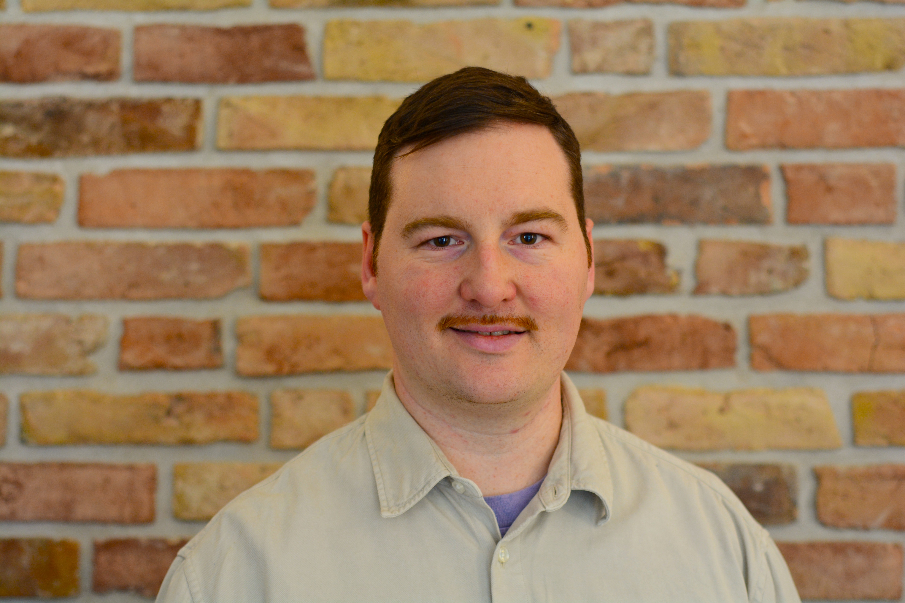
David liebt Excel, Codes und komplizierte Verfahren. Manchmal nervt's, ist aber nützlich. Und wusstet ihr, dass David mal in Wien gewohnt hat?
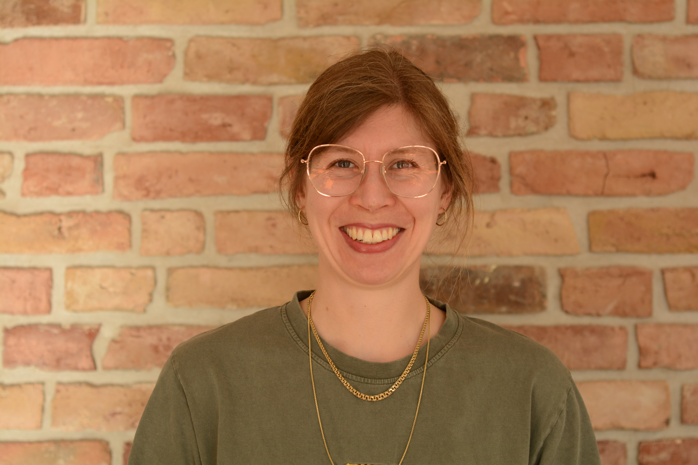
Im Haus gibt es ungeführ 50 Zimmerplanzen. Eva kennt jede und jedes Blatt an ihr. Ursprünglich eine Zwischenmieterin, bewohnt Eva nun das kleinste Zimmer.
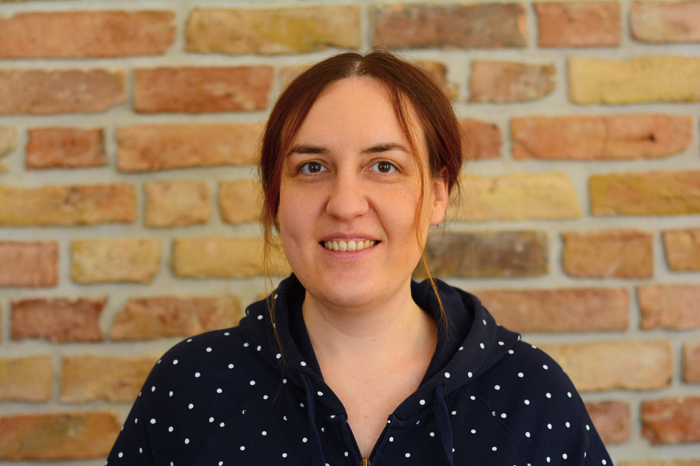
Satis ist die harmonische Fügung. Eine Art Diplomatin sozusagen. Wenn das nicht wirkt, weiß sie von Berufs wegen, wie man alle chemisch gefügig macht.
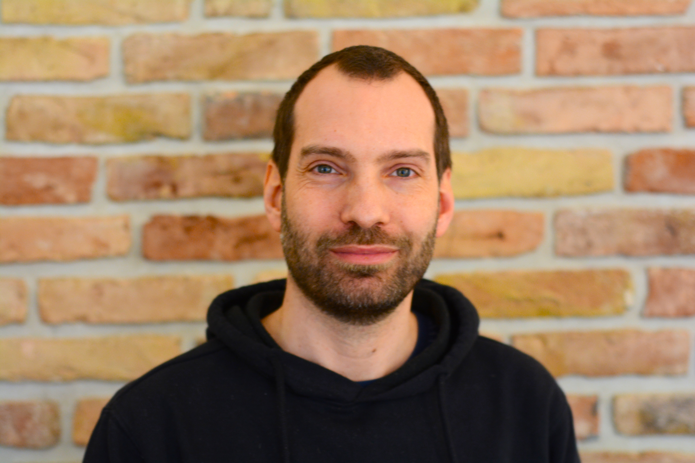
Stef malt bei uns im Auftrag. In jedem Zimmer hängt mindestens ein türgroßes Werk von ihm.

Fiete sorgt für die gehobene Unterhaltung am Tisch. Jeden Tag gibt es eine neue Geschichte.
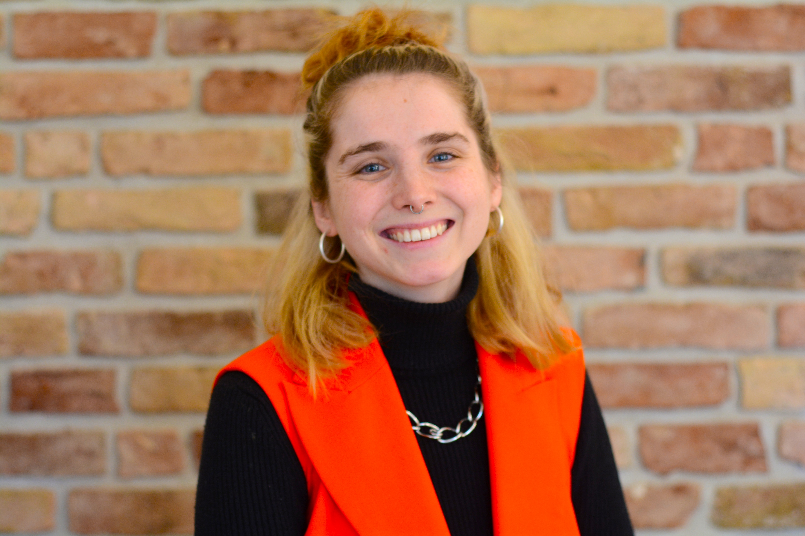
Ohne Elise würden wir nie Spieleabende machen. Je komplexer das Game, desto mehr Spaß hat sie daran.
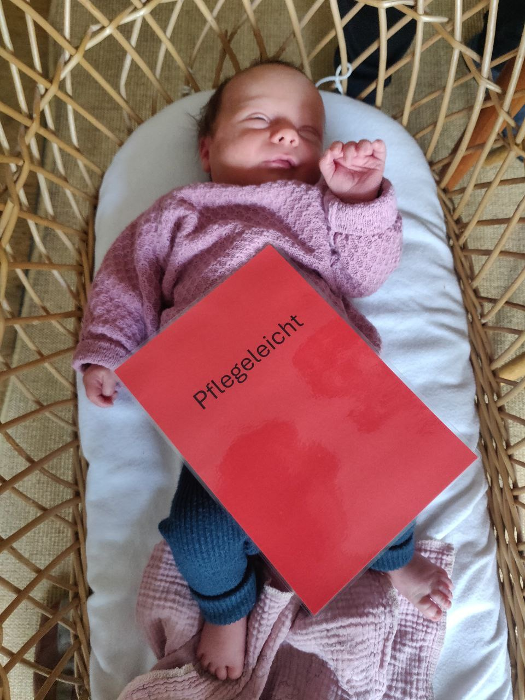
Kalle ist der erste Mitbewohner, der noch keinen anderen Wohnsitz hatte als die Syntopie. Hoffentlich wird das in Zukunft der Normalfall.
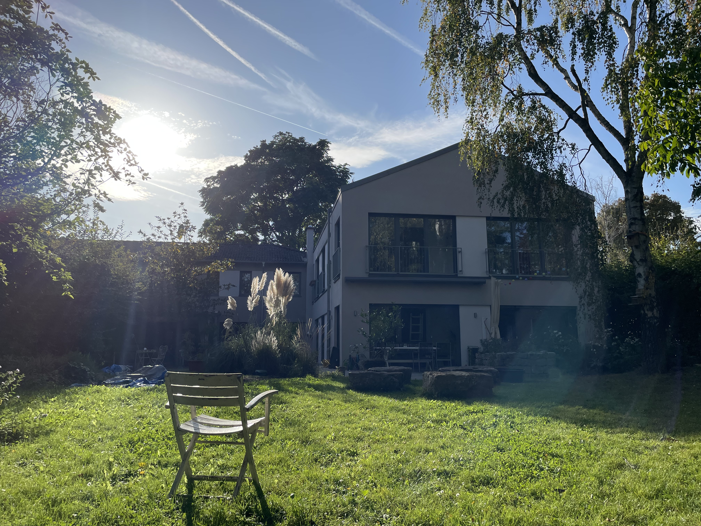
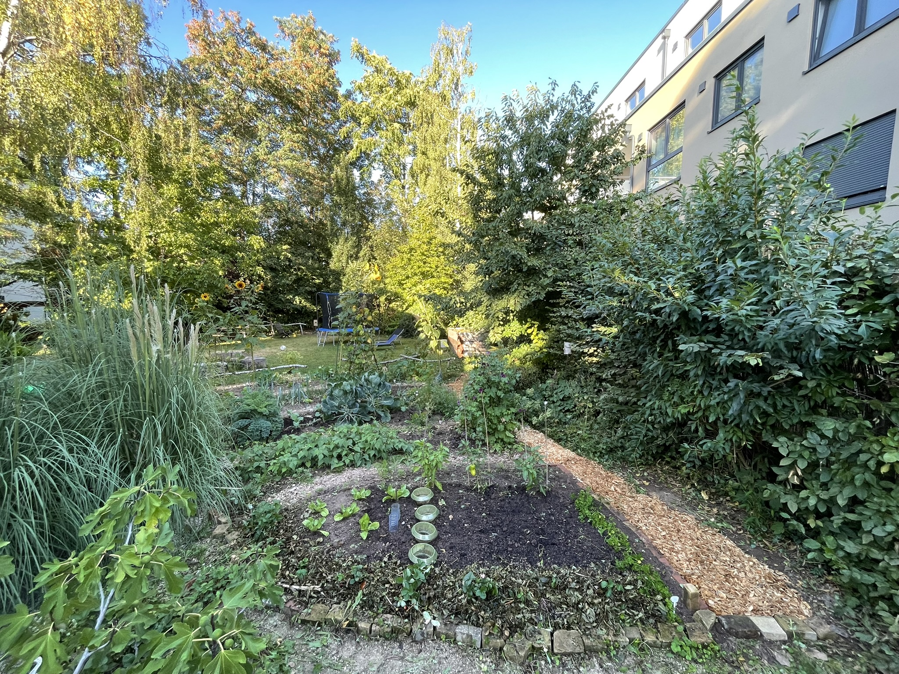
Das zweiteilige Haus besteht aus einem sanierten Altbau aus den fünfziger Jahren und einem Anbau aus dem Jahr 2015. Rund 400 m² Wohnfläche stehen der Wohngemeinschaft zur Verfügung, außerdem bietet ein großer Garten Platz zur Erholhung und zum Gemüseanbau. Im Keller und Garten befinden sich Atelierräume sowie eine Holz- und eine Kermamikwerkstatt. Der Keramikbrennofen steht Menschen in Frankfurt und Umgebung zum Brennen zur Verfügung.
Das Haus bietet zehn Zimmer, fünf Bäder, zwei Küchen und ein Wohnzimmer, sowie einen Arbeitsbereich für das Homeoffice. Für eine Wohngemeinschaft ist das Einrichtungsniveau durchaus gehoben und das Gebäude wurde im Zuge des Anbaus frisch saniert.
Ein Wehrmutstropfen ist, dass die meisten Privatzimmer nicht größer als ca. 15 m² sind. Die Gemeinschaftsräume sind zwar großzügig, aber bieten durch die sehr offene Bauweise von Küche, Wohnzimmer und Arbeitsbereich keine besonders guten Rückzugsmöglichkeiten. Für zwölf (oder mehr?) Personen ist es relativ eng. Daher besteht für uns als Bewohner:innen der Wunsch einen An- bzw. Ausbau des Hauses vorzunehmen.
Im Garten haben wir mehrere Gemüse- und Kräuterbeete angelegt, die einen Teil unsers Bedafs decken. Ob Kürbis oder rote Beete, ob Schnittlauch oder Koriander, wir lieben es und haben viel Spaß beim Anbau und der Ernte. Gerade für die Kinder ist es wichtig zu sehen, wo die Lebensmittel herkommen. Im hinteren Teil des Garten spenden zahlreiche Bäume im Sommer Schatten und bieten einen gewissen Lärmschutz gegen die nahegelegene Autobahn.
Der Garten wird von uns biologisch bewirtschaftet und bietet Vögeln, Insekten und Kleinsäugern Nahrung und Lebensraum. Grünspechte, Kohlmeisen und Turmfalken fühlen sich bei uns ebenso zu Hause wie Wildbienen, Igel und Eichhörnchen. Auch die Nachbarskatze kommt manchmal zu Besuch.
Um das Haus zu kaufen, müssen wir einen Bankkredit aufnehmen. Wie bei jedem Kredit fordern die Banken dafür ca. 20-30% Eigenkapital. In unserem Fall liegt dieser Betrag bei rund 200.000 bis 300.000 €. Ein solches Kapital können wir auch zu zwölft – na gut, zu neunt – nicht stemmen. Wir planen daher, es durch Direktkredite von Unterstützer:innen zu finanzieren.
Direktkredite sind private Darlehen an unser Projekt. Diese werden geringer verzinst als Bankkredite und werden außerdem erst nachrangig bedient, d. h. im Falle einer Insolvenz der GmbH hat die Rückzahlung des Bankkredites vorrang.
In den meisten Fällen sind die Direktkredite endfällig und haben einen Zins von weniger als 2%. Da die Laufzeit in der Regel mehrere Jahre beträgt, wird so die jährliche Zins- und Tilgungslast für uns deutlich reduziert. Daher suchen wir nach Direktkreditgebern, die mit uns einen indivduellen Kreditvertrag abschließen möchten.
Wir wollen ganz transparent sein: Direktkredite sind vor allem ein solidarisches Instrument und bieten durch ihre geringe Verzinsung den Geber:innen kaum finanzelle Anreize. Ohne diese Kredite ist es uns allerdings kaum möglich, das Haus zu erwerben, hier zu sozialverträglichen Konditionen zu leben und das Gebäude gemeinsam mit dem Mietshäusersyndikat zu vergesellschaften.
Der Kaufpreis setzt sich üblicherweise aus dem Erwerb des Grundstücks, des Hauses und den Kaufnebenkosten zusammen. In unserem Fall werden wir voraussichtlich nur das Haus, nicht aber fdas Grundstück erwerben. Das Grundstück wollen wir von der besitzenden privaten Stiftung pachten: Über einen Erbbauvertrag.
Ein Erbbauvertrag gilt für eine bestimmte Zeit, meist 99 Jahre, als baugleiches Recht. Die Pacht für das Grundstück berechnet sich durch den Erbbauzins. Neben den zu tilgenden Krediten wird die Pacht also vermutlich einen nicht unerheblichen Teil unserer jährlichen Kosten ausmachen.
Wenn du einen Direktkredit anbieten möchtest, findest du die Kontaktdaten und Kreditmodelle im Abschnitt „Direktkredit anbieten“ am Ende der Seite.
Stand jetzt streben wir an, als Verein und GmbH dem Mietshäusersyndikat beizutreten. Unsere Motivation ist dabei, dass das Haus dauerhaft gemeinschaftlich genutzt wird und nicht in privaten Besitz zurückfallen kann.
Das Mietshäusersyndikat ist ein Zusammenschluss aus derzeit rund 130 Wohnprojekten. Die Projekte unterstüzen sich gegenseitig. Das Konzept, dass das Mietshäusersyndikat als zweiter Gesellschafter mit Vetorecht gegen den Verkauf an jeder der Projekt-GmbHs beteiligt ist, entzieht die Immobilien der Mitglieder dauerhaft dem Mietmarkt.
Für weitere Informationen:
Mietshäusersyndikat
Der Kredit ist nicht ohne Risiko, denn sollte unsere GmbH insolvent sein, kann es passieren, dass Direktkredite nicht zurückgezahlt werden können.
Dies ist allerdings sehr unwahrscheinlich, da die Insolvenzmasse weiterhin wertvoll wäre. Ein Haus und Grunstück wird in Frankfurt am Main in der Zukunft wohl immernoch von Wert sein. Vor allem aber sind die Mieteinnahmen der GmbH sehr sicher, weshalb schon die Insolvenz unwahrscheinlich ist.
Der Kredit bietet keinen finanzellen Vorteil, der Vergleichbar mit Tagesgeldkonten, Anleihen oder Aktiendepots wäre. Er ist vorallem eine solidarische Unterstützung für uns als Wohnprojekt und eine Förderung eines vergemeinschafteten, solidarischen Konzepts des Zusammenlebens und -wohnens.
Zunächst keine besonders große. Derzeit tritt es vor allem als Berater auf, der uns bei der Gründung der GmbH und der Ausgestaltung der Direktredite unterstützt. In der Zukunft wird es als Gesellschafter der GmbH ein Vetorecht bezüglich des Verkaufs der Immobilie haben.
In der Regel nicht. Ein Direktkredit hat eine Laufzeit, an die beide Seiten vertraglich gebunden sind. Wir können aber in bestimmten Fällen sicherlich eine individuelle Lösung finden.
Ein endfälliger Kredit wird erst am Ende seine Laufzeit getilgt. Also nicht jährlich in Raten, sondern den im Kreditvertrag festgelegten Zeitraum
Unterstütze unser Hausprojekt mit einem Direktkredit – und wähle das Modell, das zu dir passt. Neben fairen Zinsen erhältst du eine besondere Syntopie-Prämie als Zeichen unserer Wertschätzung.
1,5–2 % Zinsen
ab 5 Jahre Laufzeit
ab 1.000 €
"Aller Anfang ist schwer, aber Hauptsache man fängt an" Gundula Grundstück
1–2 % Zinsen
ab 8 Jahre Laufzeit
ab 1.000 €
"Zeit ist Geld" Benjamin Franklin
0–1 % Zinsen
ab 10 Jahre Laufzeit
ab 10.000 €
"Machen ist wie wollen, nur krasser" Felix von Bares
0–1 % Zinsen
ab 15 Jahre Laufzeit
ab 10.000 €
"Haben ist besser als brauchen" Warren Buffett
0–1 % Zinsen
15 Jahre Laufzeit
ab 100.000 €
+ Ehrenmitgliedschaft, Namensschild im Garten,
Urkunde & optionaler Pressetermin
Schreib uns, welchen Betrag du dir vorstellen kannst und welche Laufzeit bzw. welchen Zins du dir wünschst. Wir freuen uns über dein Interesse uns einen Direktkredit zu geben. Melde dich gerne unter: